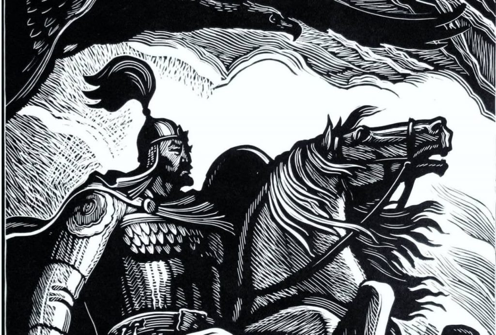
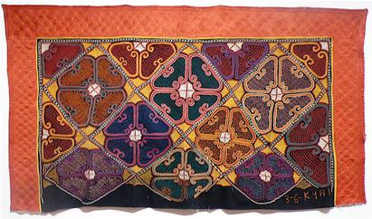
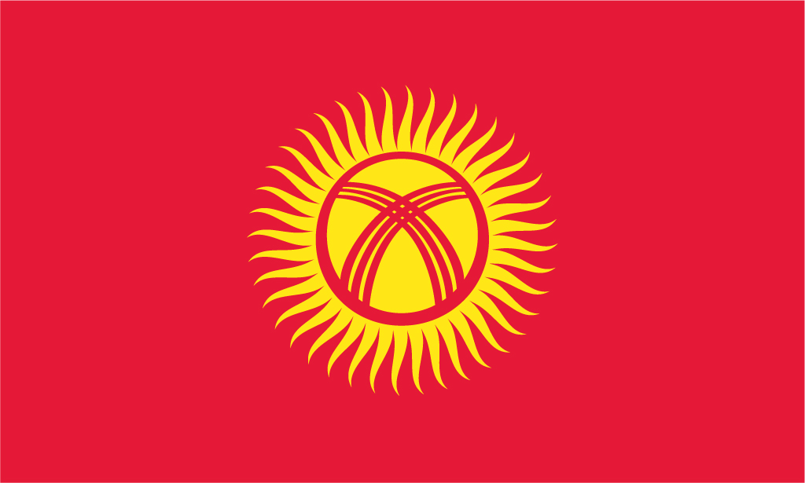

Manas, an epic poem, revolves around a series of events that coincide with the history of the region in the 9th century, primarily the interaction of the Kyrgyz people with other Turkic and Chinese people. Manas is the biggest among the poems.
Tush kyiz are large, elaborately embroidered wall hangings, traditionally made in Kyrgyzstan and Kazakhstan by women to commemorate the marriage of a son or daughter. Colors and designs are chosen to symbolize Kyrgyz traditions and rural life. Flowers, plants, animals, stylized horns, national designs, and emblems of Kyrgyz life are often found in these ornate and colorful embroideries.
Football is the most popular sport in Kyrgyzstan. The official governing body is the Football Federation of Kyrgyz Republic, which was founded in 1992...
The 40-rayed yellow sun in the center of the national flag represents the 40 tribes that once made up the entirety of Kyrgyz culture before the intervention of Russia during the rise of the Soviet Union...
In addition to celebrating the New Year each 1 January, the Kyrgyz observe the traditional New Year festival Nowruz on the vernal equinox...